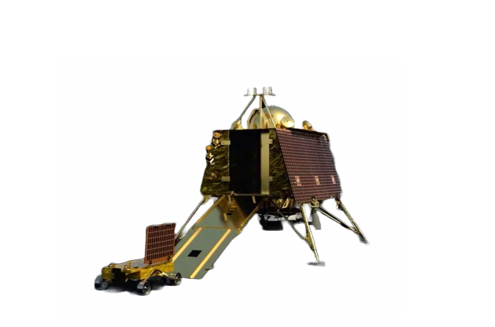

Chandrayaan-3 | Lander Vikram, rover Pragyan to return for another tryst with the moon
The Vikram lander opened to unveil a ramp, setting the stage for the rover's grand entrance. With precision and careful engineering, the ramp facilitated the rover's gentle descent, allowing it to elegantly glide down onto the Moon's terrain.



 ,
,